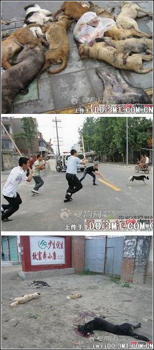

是狗疯了还是人疯了？
比畜生还不如！！！
2009年5月31日，陕西洋县在全县3206平方公里范围内进行了一场无差别的大屠杀——屠杀对象是狗！该县无论是否领取了准养证、是否注射了疫苗、是否栓、圈养，都将于5月31日被处以极刑。
洋县是在黑龙江黑河市想成为无狗县的失败后，率先成了全国第一个无犬县。
（综合网上来自洋县用户的信息）


以下来自黑麦的BLOG
一、汉中市区：
1、亲眼见打狗队，据当地市民反映打狗事件不断发生。
2、具体事件如：一名老太太带狗在市场买菜，狗放在车篮内，品种为小型京吧，打狗队趁老太太不注意，抱出来就乱棍打死。菜市场人数众多，老太太精神几乎崩溃，当场很多人也无法接受，当场也吓哭了不少小孩。
二、汉中洋县：（至2009年5月29日已捕杀2万多只）
下达命令部门—当地政府
执行部门---武警、社会闲杂人等（统一服装）
捕杀范围：所有犬只，不论大小，品种，是否有主犬
方式：
1、首先是以注射疫苗为名，诱骗公众填表，获取养犬户的详细资料，名为免费注射疫苗及办理养犬证资料登记；
2、事实为，登记之后直接上门捕杀犬只，采取方式为：棍棒打死；
现实情况：洋县当地犬只已全部捕杀完毕，送走犬只强令要求2日内送回并交由处置，每户交纳100元尸体处理费及罚款；
3、处理方式：洋县当地运输—农用运输车，每日平均2-3车犬只尸体，掩埋处理
实施部门—当地防疫站；
4、最新资料：2009年5月30日18：30分
2009年5月30日黄金侠镇（离洋县40多公里）：当日捕杀840余只
2009年5月31日及6月1日将捕杀完毕洋县辖区内所有犬只，争做“全国第一无狗县”！
5、具体事件如：一金毛在家中，无外出，打狗队根据前期登记的资料，上门捕杀。狗主出示犬只证件及疫苗证书，跪地相求，但是打狗队仍然执意执行，乱棍打死。狗主无奈，眼看求助无门，只能转而跪向自家犬只，流着眼泪说无法保护它，只能让它接受这残酷的事实，亲眼看见自家犬只在乱棍下死亡。狗主精神几乎崩溃。
11 Responses to “操他大爷”
2009-06-07
狗不是一夜之间就多到扰乱人类生活的，主管部门如果尽早进行科技干预，完全可以把危害降到最低，这对人类来说也不是什么难题。人和动物都是平等的生命，因为惧怕得狂犬病而杀狗的行为是极端和偏激的。
2009-06-07
搜索县令,赶他下台.一群暴徒.
2009-06-07
已经开始泛滥狂犬病的地区，对于捕杀流浪犬只，基本表示理性上的理解，但是对于家养的也……在国内，连狗都活得那么没狗权
2009-06-08
看的我想吐…
2009-06-08
陕西这些年出名好像都是恶劣事件，每一件好事儿。悲哀啊，频频因为这些臭名昭著的事情被人关注。
2009-06-08
就是觉得这是一个完全没有希望的地方。
2009-06-08
狗是人类最忠诚的朋友，如果有一天，人的生活里不再有狗的陪伴，那是很悲哀的
2009-06-08
中国的动物保护协会是傀儡？
2009-06-08
暴力犯。
2009-06-08
不敢想像生活在当地的人和狗的恐惧。对于政权的态度，从这些身边事最影响人心。
发生这样的事，真是悲哀。法西斯，都长在人心里。以为自己理由充分，而丧尽天良。
2009-06-11
吃人的社会依然继续
Leave A Reply
存档只读，评论已关闭。